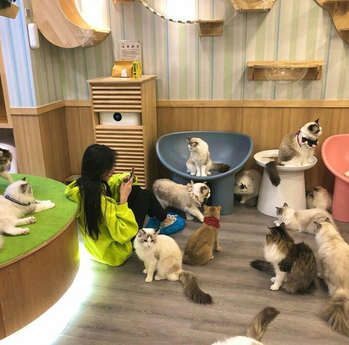
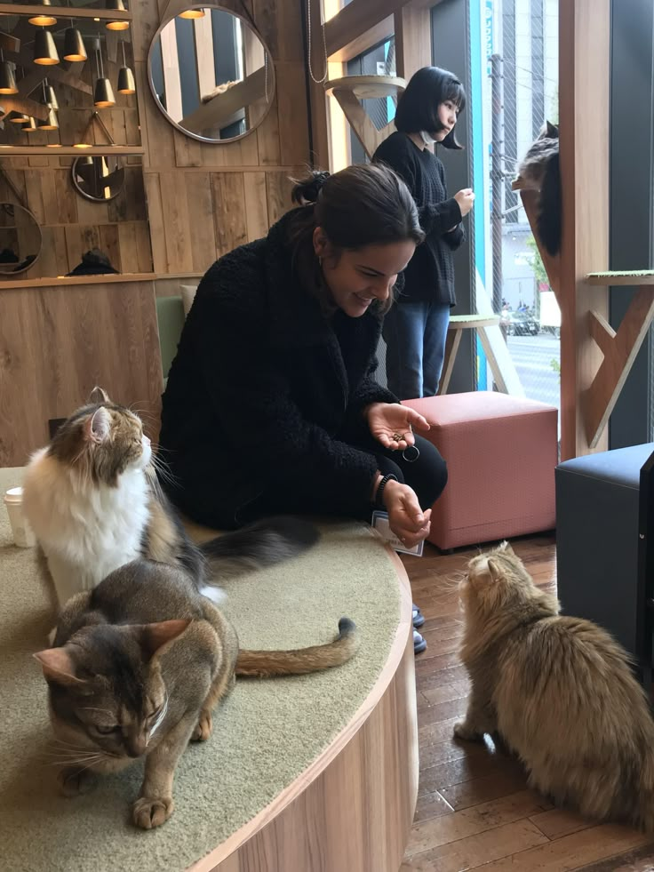
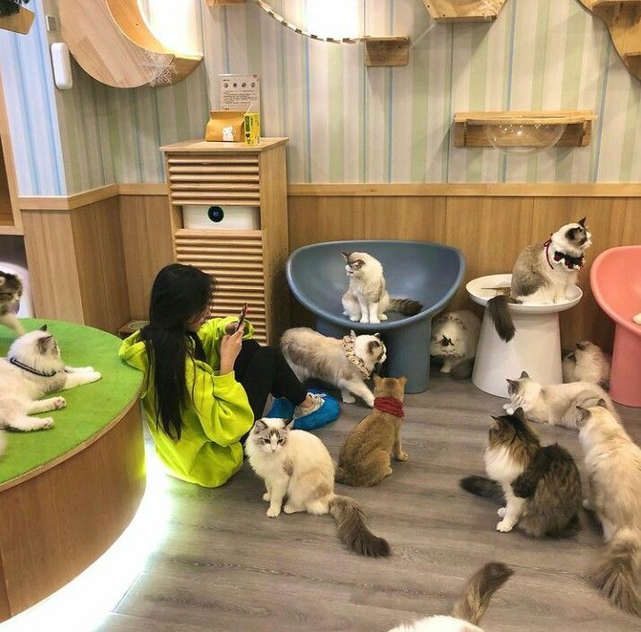
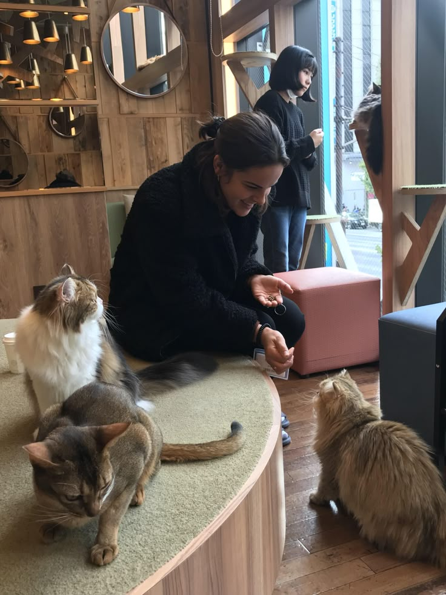

¡Bienvenidos a Neko no Mori!
Donde el aroma del café se mezcla con ronroneos y suaves patitas. Aquí podrás disfrutar de una bebida calentita, un postre delicioso y, sobre todo, la mejor compañía: nuestros adorables mininos. Relájate, acaricia, juega y deja que la ternura te atrape… porque en Neko no Mori, cada sorbo viene con amor gatuno.
 


